Beyond cosine similarity: a group-theoretic view
Why cosine is standard, what recos changes, and how similarity metrics encode assumptions about symmetry, probability, coordinate order, and representation geometry.
Always interesting to me was the question of why everyone uses particular metrics. The answer I usually received was simply that cosine similarity is the standard choice. MSE and MAE can be at be derived as likelihood solution for different noises. Cosine also has a directional likelihood interpretation, but that still does not explain why the orthogonal geometry of the sphere should be the correct inductive bias for every embedding space. After reading Xinbo Ai’s Beyond Cosine Similarity, I tried to derive a more general view from group actions: a similarity score can normalize an observed alignment by the best alignment available under a chosen symmetry group.
This perspective puts cosine and the paper’s rearrangement-based score, recos, into one template. Cosine optimizes over rotations and reflections, the orthogonal group $O(d)$. Recos optimizes over coordinate permutations, the symmetric group $S_d$. The change looks small in the formula, but it changes the saturation condition, the invariance group, the geometry of the denominator, and the meaning of a high score.
One-line summary. A similarity metric is partly a statement about which transformations should count as equivalent. Cosine assumes angular geometry is intrinsic; recos assumes the ordering of individual coordinates carries meaningful structure.
A short likelihood aside: MSE, MAE, and cosine
For a regression residual $r=y-\hat y$, fixed-variance Gaussian noise gives a negative log-likelihood proportional to $r^2$, hence MSE. Fixed-scale Laplace noise gives a term proportional to $|r|$, hence MAE.
Cosine does have a probabilistic intuition on the unit sphere. The von Mises–Fisher density satisfies $p(x\mid\mu,\kappa)\propto\exp(\kappa\mu^Tx)$, so with fixed concentration $\kappa$, maximizing likelihood is equivalent to maximizing cosine alignment. The remaining question is geometric: should embeddings be treated as directions modulo $O(d)$?
{kind=link}
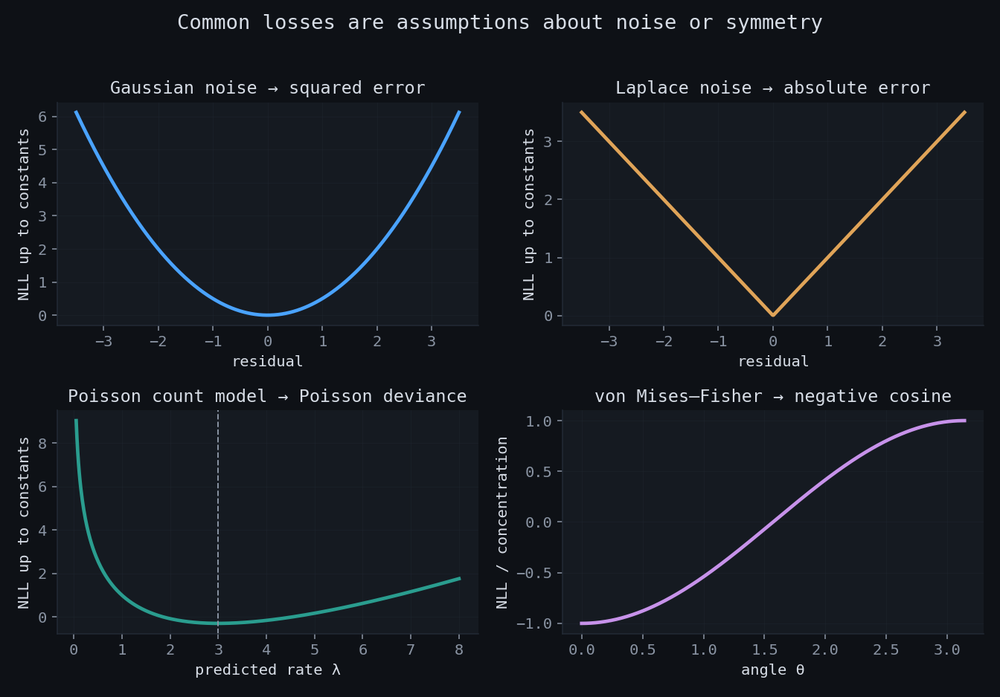
1.The paper’s proposal
Cosine similarity starts from Cauchy–Schwarz:
$$|u^Tv|\leq \|u\|\|v\|.$$Dividing the observed dot product by this upper bound produces a score in $[-1,1]$. Equality requires linear dependence, so a positive score of one means $v=cu$ for some $c>0$. The paper asks whether this bound is unnecessarily loose when the relation of interest is not proportionality but agreement in the ordering of coordinates.
Let $u^\uparrow$ and $v^\uparrow$ denote the coordinates sorted in increasing order, and $v^\downarrow$ the reverse ordering. The rearrangement inequality gives the extremal dot products over every coordinate permutation:
$$ \max_{\pi\in S_d}u^TP_\pi v=(u^\uparrow)^Tv^\uparrow, \qquad \min_{\pi\in S_d}u^TP_\pi v=(u^\uparrow)^Tv^\downarrow. $$Using the relevant signed extremum gives the sign-preserving form
$$ \operatorname{recos}(u,v)= \begin{cases} \dfrac{u^Tv}{(u^\uparrow)^Tv^\uparrow}, & u^Tv>0,\\[0.9em] \dfrac{u^Tv}{\left|(u^\uparrow)^Tv^\downarrow\right|}, & u^Tv<0,\\[0.5em] 0,&u^Tv=0. \end{cases} $$The score reaches $1$ whenever $u$ and $v$ induce the same coordinate ordering, not only when they are proportional. It reaches $-1$ when the orderings are exactly reversed. This is the central extension: perfect similarity becomes ordinal concordance.
Technical note on signs. The printed negative-dot-product branch in the manuscript appears sign-inconsistent if its denominator is used without an absolute value: a negative numerator divided by the negative rearrangement minimum becomes positive. The notebook and demos use the sign-preserving convention above, which matches the intended range and the supplied reference-code pattern.
The same inequality chain also yields a stricter score, called decos in the paper:
$$ |u^Tv| \leq \langle u^\uparrow,v^{\updownarrow}\rangle \leq \|u\|\|v\| \leq \frac{\|u\|^2+\|v\|^2}{2}. $$Normalizing by each bound gives
$$|\operatorname{decos}(u,v)|\leq|\cos(u,v)|\leq|\operatorname{recos}(u,v)|\leq1.$$A smaller valid denominator produces a wider saturation set. Decos saturates at identity, cosine at proportionality, and recos at coordinate-order agreement.
Interactive metric playground requires JavaScript.
{kind=link}
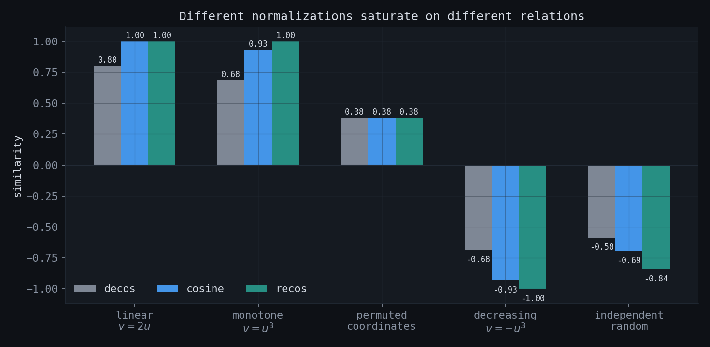
2.Similarity as orbit normalization
The group-theoretic view begins with a general construction. Let a transformation group $G$ act on vectors. Normalize the observed alignment by the best signed alignment between $u$ and the orbit of $v$:
$$ s_G(u,v)= \frac{u^Tv} {\text{best signed value of }u^T(gv)\text{ over }g\in G}. $$Cosine and recos differ only in the group:
Every permutation matrix is orthogonal, so $S_d\subset O(d)$. Optimizing over the smaller group cannot produce a larger denominator. This immediately explains the pointwise inequality $|\cos|\leq|\operatorname{recos}|$.
{kind=link}
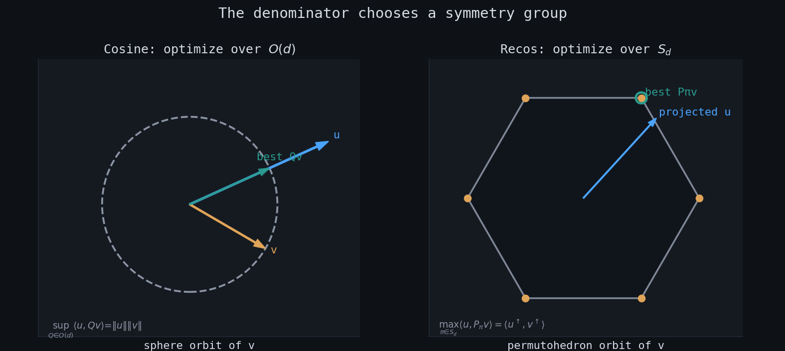
Interactive orbit demonstration requires JavaScript.
This formulation suggests a larger taxonomy. Choosing diagonal rescalings, signed permutations, block permutations, low-rank transformations, or a learned transformation family would produce other orbit-normalized scores. The mathematical question is then explicit: which group represents nuisance transformations, and which structure should remain observable?
3.Weyl chambers and nonlinear monotonicity
The hyperplanes $x_i=x_j$ partition $\mathbb R^d$ into regions indexed by coordinate orderings. In Lie-theoretic language these are the Weyl chambers of the root system $A_{d-1}$, whose Weyl group is $S_d$. Two vectors lie in the same closed chamber exactly when
$$ (u_i-u_j)(v_i-v_j)\geq0 \quad\text{for every }i,j. $$On the positive branch this is the equality condition for the rearrangement bound, hence the equality condition for recos. The interpretation is clean: recos equals one when the identity coordinate matching is already an optimal permutation matching.
{kind=link}
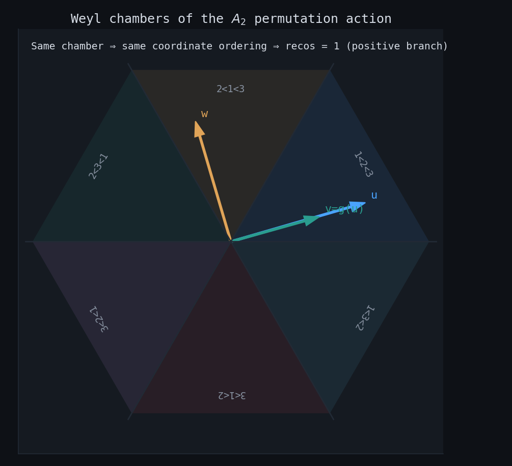
For example, if $v_i=g(u_i)$ with strictly increasing $g$, then every pair of coordinates has the same order. Recos therefore saturates at one even when $g$ is nonlinear. With $U\sim\mathcal N(0,1)$ and $V=U^3$, the large-dimensional limits are
$$ \operatorname{recos}(U,V)\to1, \qquad \cos(U,V)\to\frac{\mathbb E[U^4]}{\sqrt{\mathbb E[U^2]\mathbb E[U^6]}} =\frac{3}{\sqrt{15}}\approx0.7746. $$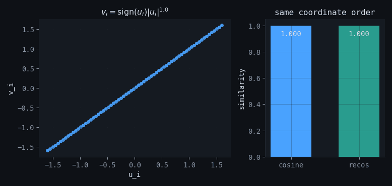
4.Random vectors and population limits
A wider saturation set does not automatically imply a new high-dimensional statistical scale. Under independent isotropic directions, cosine has exact mean zero and variance $1/d$; moreover $\sqrt d\,\cos$ converges to a standard normal distribution.
For independent vectors with identically distributed symmetric coordinates, recos has the same first-order behavior: zero mean, variance asymptotic to $1/d$, and the same Gaussian limit after multiplication by $\sqrt d$. At finite dimension its magnitude is larger because the permutation-orbit denominator is smaller, but the inflation decreases quickly with $d$.
{kind=link}
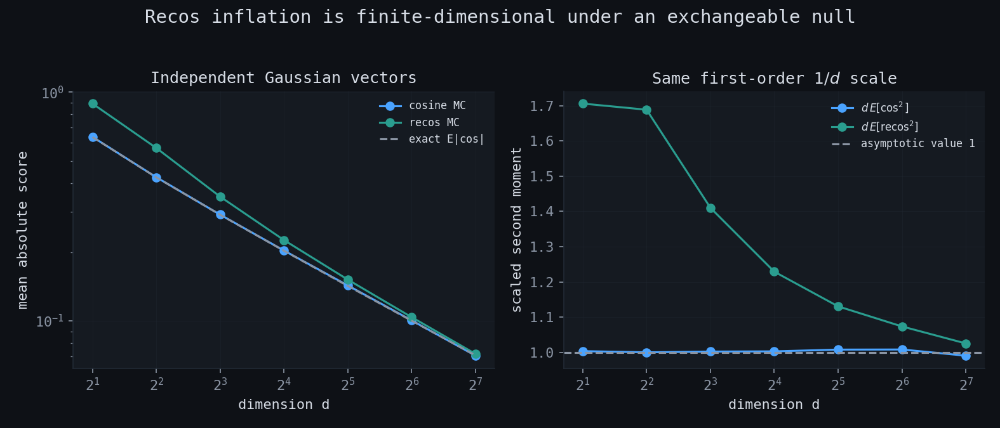
{kind=link}
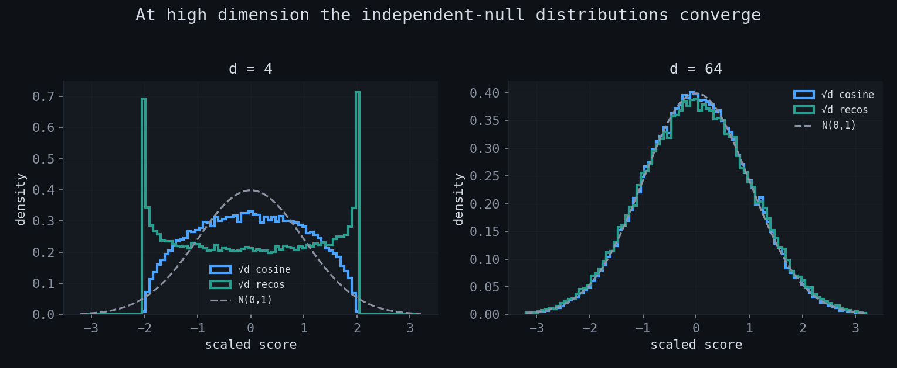
The more informative model allows dependence between matching coordinates. Let $(U_i,V_i)$ be i.i.d. pairs with marginal quantile functions $q_F,q_G$, and define the extremal couplings
$$ c_+(F,G)=\int_0^1q_F(t)q_G(t)\,dt, \qquad c_-(F,G)=-\int_0^1q_F(t)q_G(1-t)\,dt. $$If $\mu=\mathbb E[UV]>0$, then empirical quantile convergence gives
$$ \operatorname{recos}(U,V)\xrightarrow{p}\frac{\mu}{c_+(F,G)}. $$Cosine normalizes covariance by the Cauchy–Schwarz scale $\sqrt{\mathbb E[U^2]\mathbb E[V^2]}$. Recos normalizes the same covariance by the largest covariance compatible with the two marginal distributions. This is a precise probabilistic interpretation of ordinal saturation.
Interactive random-vector laboratory requires JavaScript.
5.The basis-dependence question
The strongest conceptual objection to recos is also the most interesting empirical question. If embeddings are defined only up to a common orthogonal transformation, then the coordinate axes have no intrinsic meaning. Cosine respects this equivalence:
$$\cos(Qu,Qv)=\cos(u,v)\qquad(Q\in O(d)).$$Recos does not:
$$\operatorname{recos}(Qu,Qv)\neq\operatorname{recos}(u,v)\quad\text{in general}.$$Its guaranteed invariances are smaller:
$$ \operatorname{recos}(Pu,Pv)=\operatorname{recos}(u,v), \qquad \operatorname{recos}(au,bv)=\operatorname{sgn}(ab)\operatorname{recos}(u,v), $$for permutation matrices $P$ and nonzero scalars $a,b$.
{kind=link}
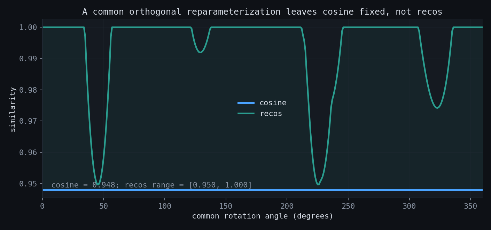
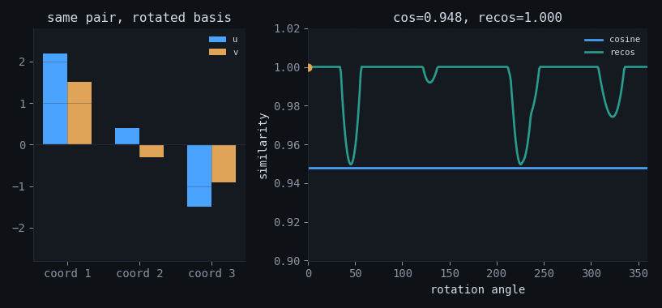
Interactive rotation test requires JavaScript.
Two interpretations of a recos gain
An improvement on a semantic benchmark can mean either of two things.
6.What the reported STS results show
The paper evaluates 11 embedding models on seven Semantic Textual Similarity datasets, for 77 model–dataset pairs. It reports that recos exceeds cosine in 71 cases, ties in five, and loses in one. The micro-average improvement is approximately $0.29$ Spearman points on the conventional $\rho\times100$ scale. The gain is modest, but its consistency is notable.
{kind=link}
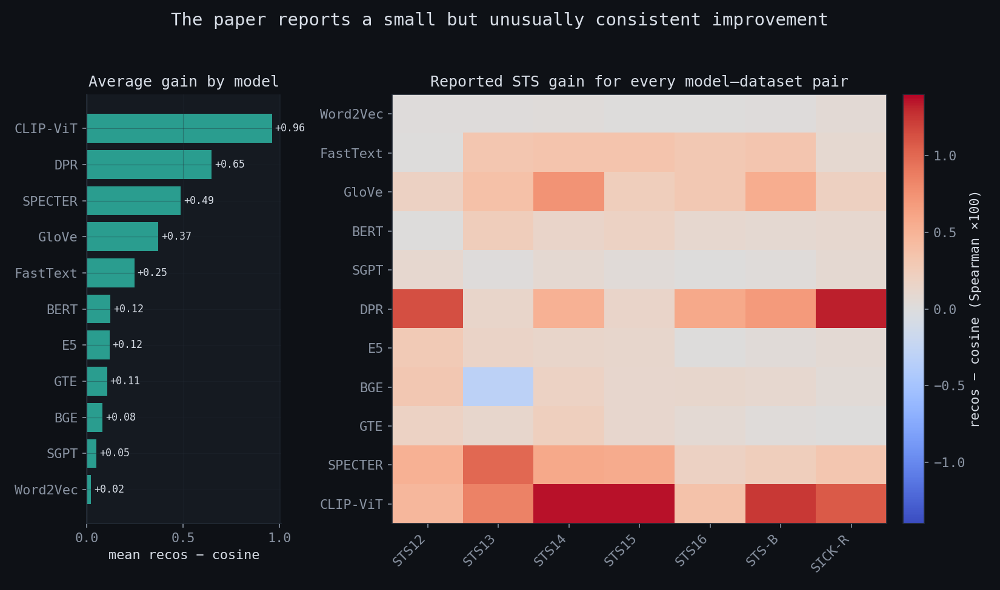
Interactive STS result explorer requires JavaScript.
These results establish that the ordinal information is not numerically irrelevant in the evaluated embeddings. They do not yet establish that the signal is intrinsic to semantic geometry. The missing experiment is the rotation distribution: evaluate the same datasets after common random orthogonal rotations. If the original basis is privileged, the unrotated performance should be systematically special rather than an arbitrary point in that distribution.
7.Structural limitations
7.1 Recos is not automatically a kernel
A Mercer kernel must produce a positive-semidefinite Gram matrix for every finite set of inputs. Recos fails this condition. For $x=(-1,-1)$, $y=(-1,0)$, and $z=(0,-1)$, the recos Gram matrix is
$$ K=\begin{pmatrix}1&1&1\\1&1&0\\1&0&1\end{pmatrix}, $$with eigenvalues $1-\sqrt2$, $1$, and $1+\sqrt2$. The negative eigenvalue means that recos cannot be inserted into kernel methods without modification.
{kind=link}
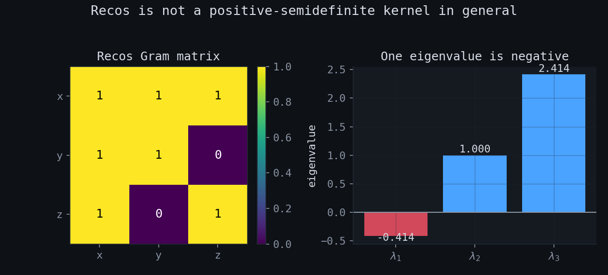
7.2 One minus recos is not a metric
For the same three vectors, recos$(x,y)=1$, recos$(x,z)=1$, and recos$(y,z)=0$. Thus $d_R=1-\operatorname{recos}$ violates the triangle inequality:
$$d_R(y,z)=1>d_R(y,x)+d_R(x,z)=0.$$Perfect ordinal agreement is not necessarily transitive when ties occur.
7.3 Sorting is not free
Cosine is $O(d)$. Exact recos requires sorting and is $O(d\log d)$. For individual vectors with dimensions in the hundreds this is usually minor. For billion-scale retrieval, the change is substantial because sorting must be performed or represented in an indexable approximation.
7.4 “Nonlinear” should be read narrowly
Recos captures monotone dependence between corresponding coordinates in the chosen basis. It is not invariant to arbitrary nonlinear transformations of the vector space, and it does not directly model curved manifolds, local neighborhoods, or general nonlinear correspondences. Its inductive bias is ordinal, not universally nonlinear.
8.Practical recommendations
| Situation | Recommendation |
|---|---|
| Unit-normalized embeddings and ordinary nearest-neighbor retrieval | Keep cosine as the baseline. It is cheap, index-friendly, and invariant to common orthogonal reparameterization. |
| Embedding axes have known or reproducible semantics | Recos is a defensible candidate because coordinate ordering may be meaningful. |
| Benchmark gain is small but consistent | Run common-rotation, centering, and dimension-scaling tests before interpreting the gain geometrically. |
| Kernel or spectral algorithm | Inspect the Gram spectrum. Do not assume recos is positive semidefinite. |
| Large retrieval system | Measure sorting cost and investigate partial sorting, quantile sketches, or learned approximations. |
| Training objective | Treat recos as an inductive bias. Check gradients near ties and whether axis-specific ordering is stable across seeds. |
The main experiment I would add. Train or extract one embedding set, sample many common Haar-random orthogonal matrices $Q$, and evaluate STS with recos$(Qu,Qv)$. Cosine provides a constant control. The location of the original basis inside the resulting recos distribution measures whether its coordinate ordering is special.
9.Notebook and artifacts
The companion notebook contains executable versions of the derivations and diagnostics:
notebook with all experiments · group-theoretic analysis source ·
The useful contribution of recos is that the normalization bound can be read as a symmetry assumption. Once that assumption is visible, the comparison becomes more precise: cosine checks whether two vectors point in the same direction while recos looks whether their coordinates make the same ordinal judgments. Which question is appropriate depends on how the representation was constructed and which transformations should leave it unchanged.